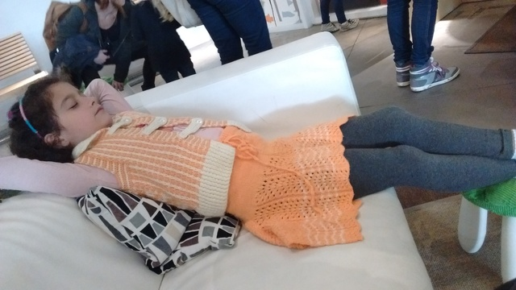

ابرقهرمان تنبل یا ابرتنبل قهرمان

از رمانی که نخواهم نوشت:
کسی منبع تابش الکترومغناطیس را نمیداند. شاید هم ادعا میکنند نمیدانند. رسانههای زرد از اشیای پرنده ناشناخته میگویند و رسانههای زردتر تئوریهای توطئه رنگ و وارنگ رو میکنند. از نقش ماهوارههای جدید چین تا ویروسهای موبایل. هر چه که هست آثار جانبیاش همه جا را گرفته. گویا کسی طراحیاش کرده برای دستکاری عملکرد مغز مردم زمین. مردم عصبانیاند. مثل همیشه نه. بیشتر. خیلی. سلام و علیک روزانه میرسد به دعوا و کتککاری و خون و خونریزی. نه بیمارستانها ظرفیت پذیرش دارند، نه زندانها و نه -به زودی- قبرستانها. خانه و خیابان صحنه جنگ است و کاری از کسی بر نمیآید.
هوشنگ، که قبل از شروع بحران عصبانیت، توی محله هفتتنان شیراز آقا هوشنگ صدایش میکردند مغازه لبنیاتی دارد. شیر و ماست و پنیر و تابستانها دوغ. آقا هوشنگ کره نمیفروشد. دلیلش را به کسی نگفته ولی قدیمیترها میدانند پدر خدابیامرز آقا هوشنگ عاشق کره بوده و تا دم آخر که همان پای سفره قلبش خسته میشود و چند دقیقهای استراحت میکند، از برنجش روغن میچکیده. مرد شیرفروش کلید در حیاط را دارد و صبح زود سهمیه شیر آقا هوشنگ را بیسر و صدا میگذارد و میرود. آقا هوشنگ خواب صبح را همانقدر دوست دارد که از کره بدش میآید. روزی که تابش امواج الکترومغناطیس مشکوک شروع شد آقا هوشنگ به شیر داغ مایه پنیر اضافه میکرد و سرش را مرتب تکان میداد یعنی دارد به حرفهای زنش گوش میکند. با خودش فکر میکرد جا داشته امروز صبح نیمساعت بیشتر بخوابد. نیم ساعت را اضافه کرد به طلبهای هفته که جمعه صبح -با خودش- تصفیه کند.
حس کرد صدای زنش بلندتر از همیشه شده «حواست کجاست؟ گفتم چرا نمیزنی؟». هوشنگخان جا خورد «چیچی؟». «سیبیلت». «بعد هفت سال چطو شده یادی از ای سیبیلو کِردی؟» و سرش را برگرداند سمت زنش. به موقع جاخالی داد. نمیدانست از پارهآجری که از کنار صورتش رد شد و جیغ زوزهوار زنش بترسد یا عصبانی باشد...
...
«سیبیلت کجا رفت آقا هوشنگ؟».«باد برد کاکو».
...
«تو عصبانی نَمیشی آقا هوشنگ؟»«چرا. اما به خودُم میگم ولش کن».
دیدگاهها
Comments powered by Disqus